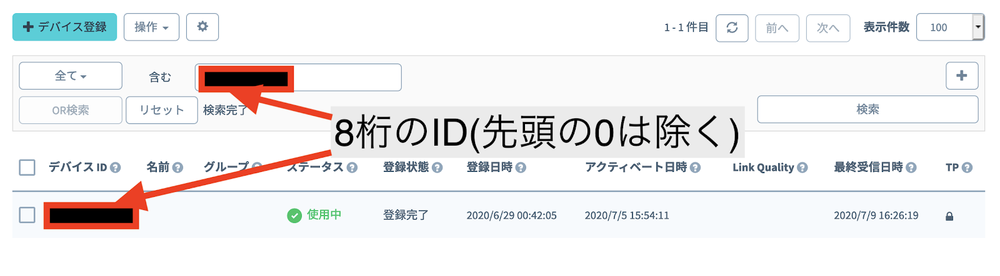
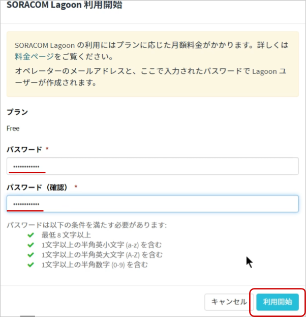
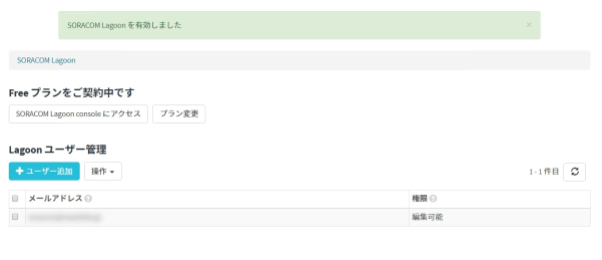
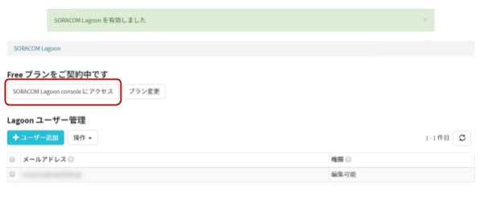
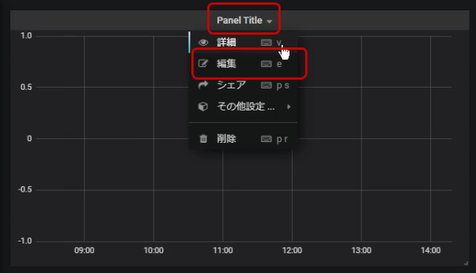

公開日: 2020年7月
レシピ難易度：★★★☆☆
自社の倉庫や車両基地の浸水対策として自社独自の冠水検知の仕組みを作ることができれば、現場にいなくても複数拠点の情報を正しく把握し、素早い対策を行うことが出来ます。
本レシピでは屋外利用の設置実績が豊富な専用品であるWatty社製冠水センサー「HL-MC1A」とOPTEX社製Sigfoxデバイス「ドライコンタクトコンバーター」を活用して、冠水の検知の仕組みを作っていきます。また、データの送信と可視化にはIoTプラットフォームSORACOMの機能を利用します。
このレシピでは屋外での長期間利用を実現するために、低消費電力でのIoTに特化した通信方式Sigfoxを利用します。
本レシピを行うのに必要な時間、概算費用
本レシピは以下の通りです。
- 必要な時間: 約2時間
- 概算費用: 約100,000円
※ 概算費用: ハードウェアや SORACOM を始めとした各種サービスの概ねの費用 (税や送料などの付帯費用や無料枠適用は考慮しないものとしています)
このコンテンツの進め方
ページの内容を読み、また作業を行ったら右下の［Next］を押して次のステップへ進みます。また、［Back］を使って戻ったり、左のナビゲーションメニューでもページの移動が可能です。
左上の［×］を押してコンテンツを終了することができます。また、ページを開きなおすことで再開できます。ページのアドレスはブラウザの［履歴］メニューを利用してください。
本レシピを行うためには以下のものをご用意ください。
ハードウェア
品名 | 数量 | 価格 | 購入先 | 備考 |
ドライコンタクトコンバーター | 1 | 14,980円 | 付属品は以下のとおりです。
ステー等は別売りとなります。 | |
HL-MC1A ワイヤレス冠水センサー | 1 | 80,000円 | 今回利用するセンサーは「HL-MC1A」となります。こちらは接点形式：a接点(NO)のセンサーとなります。 | |
ポール取付金具 SSK-P100 | 1 | 1,790円 | バンドで本体を固定する場合に利用する金属ステーとなります。 | |
ビスセットSSK-B4-25N(M4×25 | 1 | 209円 | 「ポール取付金具 SSK-P100」を本体に固定するためのビスのセットとなります。 |
※ 金額はレシピ作成時となります。ソラコムで販売している金額は税抜き・送料別です。
その他必要なもの
必要なもの | 費用 | 作成方法など |
SORACOM アカウント | 無料※ |
※ アカウント作成・維持の費用の料金です。
準備・設置に利用したもの
本レシピで設置時に利用した部材です。必須ではありませんがご参考にお使いください。
品名 | 数量 | 備考 |
プラスドライバー | 1 | ドライコンタクトコンバーターの蓋の開閉、金属ステー取り付け時に利用します。 |
スパナ 7mm | 1 | 金属ステーへの取り付け時のナットの固定に利用します。ラジオペンチでも代用可能です。 |
結束バンド | 4 | ドライコンタクトコンバーター、冠水センサーにそれぞれ２本ずつ使用。 ホームセンター、100円ショップ等で入手可能です。 |
ドライコンタクトコンバーターをIoTストアで購入いただいた場合、購入にご利用いただいたSORACOM アカウントに紐付いた状態で出荷されます。
SORACOM Webコンソールにログインしたあと、Menu > Sigfoxデバイス管理で、お手元のドライコンタクトコンバーターがコンソールに登録されているか確認します。
Sigfoxデバイスの一覧画面が表示されます。IDで検索をして対象のドライコンタクトコンバーターを表示させます。検索には本体側面のラベルにあるIDを利用します。先頭に0が入っている場合は先頭にあるすべての0を外して検索を実行します。
例：00543210と記載があった場合、543210と入力して検索を行います。

ドライコンタクトコンバーターを箱から取り出し、冠水センサーの取り付けを行います。
ドライコンタクトコンバーターのアンテナを取り付ける。
付属のアンテナを本体のコネクタ部に接続します。
ドライコンタクトコンバーターの蓋を外す。
本体の表側に樹脂製のネジ4本で蓋が固定されているので、プラスドライバーを利用して蓋を外す。
ケーブルグランドに冠水センサーのケーブルを挿入する。
ケーブルグランドのキャップを外し、キャップにセンサーのケーブルを通す。キャップにセンサーを通した状態で、本体のケーブルグランドにセンサーを挿入します。
ケーブルを挿入し終えたら、キャップをケーブルグランドに取り付けます。
冠水センサーをドライコンタクトコンバーターの接点に接続する。
冠水センサーをドライコンタクトコンバーターの接点部分に接続します。今回は接点の入力1にセンサーを接続します。本センサーに極性はないため、配線の向きはどちらでもかまいません。
本体の入力端子の上部のボタンを強く押しながら配線を奥まで挿入し、ボタンを離すことで固定されます。

動作モードをDIPスイッチを利用して設定する。
DIPスイッチで動作モードの設定を行います。それぞれのスイッチは以下の設定に対応しています。
CH1 | モード | OFF：アラームモード ON：カウントモード |
CH2 | NO/NC | OFF：NO ON：NC |
CH3 | 信号検知 | OFF：両エッジ ON：片エッジ |
CH4 | 死活監視 | OFF：切り ON：入り |
本レシピでは冠水を検知するたびに通知するためCH1はOFFのアラートモード、利用するセンサーはa接点(NO)なのでOFFのNOモード、冠水と水が引いたことの両方を検知するためにCH3はOFFの両エッジモード、死活監視は本レシピでは利用しないためOFFに設定します。各モードの詳細については、ODC-01_OperationGuide.pdfをご覧ください。
電源コネクタを接続し、初回起動操作を行う。
リチウムイオン電池のコネクタを本体に接続し、青色のイニシャルボタンを３秒以上長押しして起動します。初回起動後は電源コネクタを抜き差しすることで本体のON/OFFを行います。
正常に起動するとボタン上部の赤色LEDが点灯し、起動が確認できます。
冠水センサーの動作を確認する。
冠水センサーを水につける、もしくは上下逆さまにして中のフローターを動かします。冠水センサーの接点がつながると赤色のLEDが点灯し、データが送信されていることがわかります。
本体設置用のステーを取り付ける。
ポール取付金具 SSK-P100を本体にとりつけます。ビスセットSSK-B4-25N(M4×25)を使って本体裏側にステーを取り付けます。このときナットが外装の外側にくるように取り付けを行ってください。
カバーを閉めて、ビスでカバーを固定する。
全ての接続が終わったらカバーを元のとおりに閉め、付属のビスで4箇所を固定します。ビスはプラスチック製なのでなめないよう注意して作業をしてください。また、1箇所を最初に強く締めすぎると他のビスが締めにくくなるので、4箇所をバランス良く締めてください。このカバーがしっかり固定されていないと防水性能が発揮できなくなるため、確実にカバーと本体が密着している状態になるよう作業をしてください。
ドライコンタクトコンバーターのデバイスの設定は SORACOM ユーザコンソール上で行います。
ドライコンタクトコンバーターに名前をつける。
SORACOM ユーザーコンソールにログインした後［Menu］>［SORACOM Air for Sigfox］> [Sigfoxデバイス管理]とクリックします。
手元にあるドライコンタクトコンバーターのIDで検索し、名前の部分にカーソルを合わせるとペンのマークが出るので、クリックします。
クリックするとそのままテキスト編集ボックスが表示されるので好きな名前をつけてEnterを押し、決定します。
SORACOM の IoT データ収集・蓄積サービス SORACOM Harvest Data を利用して、データの可視化を簡単に実現してみましょう。
まずはグループの作成と、作成したグループへ Sigfoxデバイス を所属させる事から始めます。
SORACOM ユーザーコンソールにログインした後［Menu］>［SORACOM Air for Sigfox］> [Sigfoxグループ]とクリックして Sigfoxグループを開きます。
追加ボタンをクリックし、新しいグループを作成します。
［Menu］>［SORACOM Air for Sigfox］> [Sigfoxデバイス管理]とクリックして Sigfoxグループを開きます。
SORACOM Harvest Data でデータの収集を行いたい Sigfoxデバイスにチェックを付け、［操作］>［所属グループ変更］とクリックします。
「新しい所属グループ」のプルダウンボックスをクリックした後、さきほど作成したグループを選択し、グループ変更をクリックする。
Sigfoxデバイス 管理画面から、利用すSigfoxデバイスに割り当てたグループ名をクリックします。
［基本設定］ >［SORACOM Harvest Data 設定］をクリックして設定ができるように開きます。
先ほどの設定を行ったページ内にあります。
「SORACOM Harvest 設定」で以下のように設定します。
項目 | 設定値 | 備考 |
（スイッチ） | ON | ― |
スイッチはクリックすることで OFF から ON に切り替えることができます。
最後に［保存］をクリックしてください。
その後表示される「SORACOM Harvest が有効になっています」のダイアログでは［OK］をクリックしてください。
以上で「SORACOM Harvest Data」の設定が完了しました。
Sigfoxデバイスからの情報はデバイスで定義されたバイナリで送信されます。しかし、バイナリ形式ではデータを取り扱うことが難しいため、バイナリパーサー機能を利用して、JSONに変換します。
Sigfoxデバイス 管理画面から、利用すSigfoxデバイスに割り当てたグループ名をクリックします。
［基本設定］ >［SORACOM Air for Sigfox 設定］をクリックして開き、バイナリパーサーを設定します。
バイナリパーサーをONに設定し、フォーマットに下記の設定を入力したら、保存をクリックします。
event:0:char:2 usr_channel:0:uint:2:2 usr_value:1:uint:1:2 count_ch1:2:uint:16 count_ch2:4:uint:16 battery_status:6:uint:8
次に冠水センサーとドライコンタクトコンバーターを設置していきます。本レシピではポールに結束バンドで固定する方法での設置を行います。
ドライコンタクトコンバーターの設置
ドライコンタクトコンバーターに取り付けたポール取付金具 SSK-P100に結束バンドを通し、ポールに固定します。
ドライコンタクトコンバーターは水没してしまうと故障してしまうため、なるべく高い位置に設置することが望ましいです。
冠水センサーの設置
冠水センサーにはステンレスのケースと一体となってステーがついており、これを設置に利用します。
ドライコンタクトコンバーター同様に結束バンドを通し、ポールに固定します。本レシピでは結束バンドで固定をしていますが、より信頼性を求められるユースケースの際は対象へのネジ止めや専門業者への設置工事依頼もご検討ください。
設定と設置が完了したら、蓄積されたデータを SORACOM Lagoon で活用していきます。
SORACOM Lagoon 用語解説
ここで SORACOM Lagoon で使われる用語を解説します。
用語 | 意味 |
プラン | SORACOM Lagoon の契約プランです。機能と料金が異なります。SORACOM Lagoon のご利用料金に機能や料金の比較表があります。 |
メトリクス (メトリック) | データが格納されている先です。SORACOM Lagoon では以下の4つの中から選び、その中からノード(SIMや回線)を選択します。
|
データソース | メトリクスの参照先です。SORACOM Lagoon では "Harvest" (= SORACOM Harvest) を選ぶとメトリクスが展開されます。 Grafana ではテスト用のランダムデータが表示されます。 |
パネル | パネルはデータを表示する領域です。データソースとメトリクスを指定すると、そのメトリクス(たとえばSIM)のデータをパネルで使えるようになります。 様々なパネルが存在します。 |
ダッシュボード | 複数のパネルを束ねて「1枚の画面」にしたものがダッシュボードです。共有の単位となります。 |
SORACOM Lagoon ユーザー (Lagoon ユーザー) | SORACOM Lagoon へログインするためのユーザー(IDとパスワードの組) SORACOM ユーザコンソールへのログインとは異なるユーザ一覧となり、皆さん自身で登録・削除が可能です。ダッシュボードやパネルを編集できる「編集可能」と表示専用の「読み取り」の2段階の権限を設定できます。 作成可能数はプランによります。 |
データリフレッシュ | SORACOM Harvest から SORACOM Lagoon へデータが反映される事、もしくは反映タイミングとなります。反映タイミングはプランによります。 |
アラート | メトリクスのデータに対して条件を設定し、その条件を満たしたら通知を行う仕組みの事です。 |
SORACOM ユーザーコンソールの［Menu］>［データ収集・蓄積・可視化］>［SORACOM Lagoon］とクリックします。

［SORACOM Lagoon の利用を開始する］をクリックします。

プランのうち［Free］を選択したあと［続行する］をクリックします。

SORACOM Lagoon ユーザーの初期ユーザーに設定するパスワードを入力した後、［利用開始］をクリックします。

SORACOM Lagoon の有効化に成功すると、以下のように SORACOM Lagoon コンソールへのリンクと、Lagoon ユーザーの一覧が管理できるようになります。
この画面を SORACOM Lagoon 管理画面と呼びます。

SORACOM Lagoon 管理画面は、SORACOM Lagoon が有効化されている間は ［Menu］>［データ収集・蓄積・可視化］>［SORACOM Lagoon］で表示する事ができます。
SORACOM Lagoon 管理画面を表示したあと、［SORACOM Lagoon console にアクセス］をクリックします。
※ SORACOM Lagoon 管理画面は ［Menu］>［データ収集・蓄積・可視化］>［SORACOM Lagoon］で表示する事ができます。

SORACOM Lagoon へログインします。
メールアドレス (SORACOM ユーザコンソールへログインする際のメールアドレス) と、SORACOM Lagoon 初期ユーザ作成時に利用したパスワードでログインします。
ログインに成功すると、以下のような画面が表示されます。これが SORACOM Lagoon ログイン直後の画面です。ここから「ダッシュボード」や「パネル」を作成していきます。
作成アイコン にカーソルを乗せると表示される「作成」メニューから［ダッシュボード］をクリックします。
にカーソルを乗せると表示される「作成」メニューから［ダッシュボード］をクリックします。

［Graph］ をクリックします。
"Panel Title" >［編集］をクリックします。

"メトリック" タブでノード(= Sigfoxデバイス) をクリックし、ドライコンタクトコンバーターに紐づいている ノード を選びます。
データソースは "default" になっているので、メトリクスは "Sigfox"に設定し、ノード(= Sigfoxデバイス) を選びます。
表示データは"usr_value"を選択します。
画面右上のダッシュボードに戻る ボタンをクリックします。
ボタンをクリックします。

ここからの作業
ダッシュボードでは、右上の保存ボタン でダッシュボードを保存したり、パネルを追加ボタン
でダッシュボードを保存したり、パネルを追加ボタン でパネルをダッシュボードに追加していくことになります。
でパネルをダッシュボードに追加していくことになります。
また、既存のパネルは "Panel Title" のクリックで表示される［編集］から内容を変更できます。
冠水センサーのON/OFFがわかりやすく見えるようにグラフの詳細設定を行っていきます。設定は行う項目は以下のとおりです。
- パネルタイトルを設定する。
- 「Y軸」の最大値、最小値の設定を行う。
- 「表示」の階段表示の設定を行う。
これらの設定を行った結果が以下の図です。
パネルタイトルを設定
"全般" タブの "タイトル" を入力すると、パネル上部の "Panel Title" の部分が、タイトルで入力した内容になります。タイトルは"水位"とします。
Y軸の最小値、最大値の設定
"軸" タブを選択し、左Yの最小に"0"、最大に"1"を設定します。
階段表示の設定
ドライコンタクトコンバーターは接点がONまたはOFFになったときにデータを送信します。そのため、送られてきたデータを単純に線で結ぶと以下のように斜めの形になってしまい、実際の接点のONとOFFの切り替わり地点がわかりにくくなってしまいます。
そこで"階段表示"の設定を行うことでONとOFFの切り替わりを矩形で表現できるようになり、接点の切り替わりがよりわかりやすくなります。
"表示"タブの"モードオプション"にある"階段表示"のチェックをONにすることで階段表示の設定ができます。

本レシピでは、屋外で長期間利用可能な冠水センサーとドライコンタクトコンバーターを用いて、冠水検知可能なシステムを実現しました。
さらなる応用例としては、よりアクティブな監視システムとして冠水センサーがONになったことを通知する機能の実装や、過去数年分のデータの統計情報の可視化などが考えられます。また運用面ではいざというときにドライコンタクトコンバーターが故障していた、電池が切れていたといったことはないように死活監視を行うことも必要になるかと考えられます。
屋外で長期間動作可能なシステムとなっておりますので、機能の実現だけでなく運用やメンテナンスも重要となります。そのあたりも考慮していただくとよりよいシステムとして進化させていくことができるのではないでしょうか。
本レシピでは、屋外で長期間利用可能な冠水センサーをご紹介いたしました。本レシピで利用したドライコンタクトコンバーターは接点を２つまで接続することが可能ですので、冠水センサーを２つ取り付けて２段階の水位レベルを取得することが可能です。
その方法を簡単にご紹介します。
冠水センサーの接続
冠水センサーをドライコンタクトコンバーターの接点部分に接続します。今回は冠水センサーを2つ利用しますので、接点の入力1、入力2にそれぞれセンサーを接続します。本センサーに極性はないため、配線の向きはどちらでもかまいません。注意点として、センサーの配線が4本あるので、バラバラの接続にならないよう一つのセンサーの配線二本を入力1にもう片方のセンサーの配線二本を入力2に接続するようにします。
今回は水位を二段階で検出できるようにするため、低水位側を入力1に高水位側を入力2に接続します。

本体の入力端子の上部のボタンを強く押しながら配線を奥まで挿入し、ボタンを離すことで固定されます。
冠水センサードライコンタクトコンバーターの設置
二段階の水位を検知するために入力1に接続したセンサーを低水位側に入力2に接続したセンサーを高水位側に設置します。
バイナリパーサーの設定
バイナリパーサーをONに設定し、フォーマットに下記の設定を入力したら、保存をクリックします。
event:0:char:2 usr_channel:0:uint:2:2 usr_value:1:uint:1:2 count_ch1:2:uint:16 count_ch2:4:uint:16 battery_status:6:uint:8 low:0:uint:8:1:-82 high:0:uint:8:1:-146
SORACOM Lagoonの設定
レシピ本文と同様にSORACOM Lagoonにてメトリクスの設定を行います。データソースは "default" になっているので、メトリクスを "Sigfox"に設定し、ノード(= Sigfoxデバイス) を選びます。表示データは"low"を選択します。この"low"は低水位側のセンサーの値を示しています。
先ほどと同じ手順でGraphパネルを作成し、"メトリック"タブで高水位側のデータを指定します。高水位側の表示データは"high"となります。
グラフの詳細を設定
- パネルタイトルを設定する。
- 「Y軸」の最大値、最小値の設定を行う。
- 「表示」の階段表示の設定を行う。
"全般" タブの "タイトル" を入力すると、パネル上部の "Panel Title" の部分が、タイトルで入力した内容になります。今回は２枚のパネルを利用するため、一枚目は"高水位"、二枚目は"低水位"とします。
「Y軸」の最大値、最小値の設定、「表示」の階段表示の設定はレシピ本文と同様の手順で設定を行います。正しく設定が完了すると、以下のように"低水位"と"高水位"の状況がグラフで確認できます。